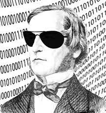

The bool Data Type

The if statement tests a condition, an expression whose value is either true or false. This is called a Boolean expression, after the mathematician George Boole, who developed the mathematical theories which underly much of Computer Science. In C++, the built-in Boolean data type is called bool.
You can create bool variables, just like other variables:
bool a = true;
bool b = false;A Few Pitfalls
In Java, the bool type is called boolean, while in Python, the values are capitalized, as True and False. However, those are minor differences. The real pitfalls with the C++ bool type is that, for historical reasons, the bool type implicitly converts to many other types. This is not true in Java or Python, so it may be a source of confusion for you.
When the C++ compiler needs a Boolean value (such as in a an if statement, or a while condition), and it finds a value of another numeric, pointer or class type then:
- If the value can be converted to 0 then it is treated as false.
- Otherwise, the value is treated as true.
bool a = 5; // 5 converted to true
int b = a; // a converted to 1
bool c = 0; // 0 converted to false
bool d = "hello"; // "hello" (a pointer) converted to true;
cout << d << endl; // prints 1 (NOT true)You'll notice that printing the bool variable d in this example does not print true or false as it would in Java and Python, but 1 and 0. You can change that by using the boolalpha manipulator, like this:
cout << boolalpha << d << endl;We'll revisit the effects of this behavior as we go on. You can run this example in an online IDE by clicking the link in this sentence.
 This course content is offered under a
CC
Attribution Non-Commercial license. Content in this course
can be considered under this license unless otherwise noted.
This course content is offered under a
CC
Attribution Non-Commercial license. Content in this course
can be considered under this license unless otherwise noted.